当前技术报告、详细解读、4段视频与19组核心配图。
同一HO-Cap片段：物体名称、手部与6D、当前复核阶段、实际LSTM候选。
完整流程采用HO-Cap跨数据集输入，真实概率按原样保留。画面中的当前交互阶段属于视觉复核提示；本片段没有交互真值，不用于计算约0.93的测试指标。
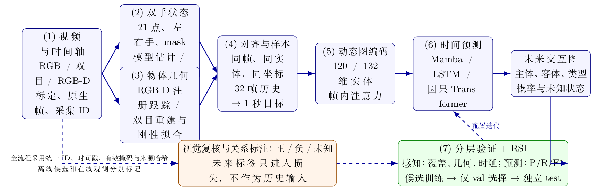
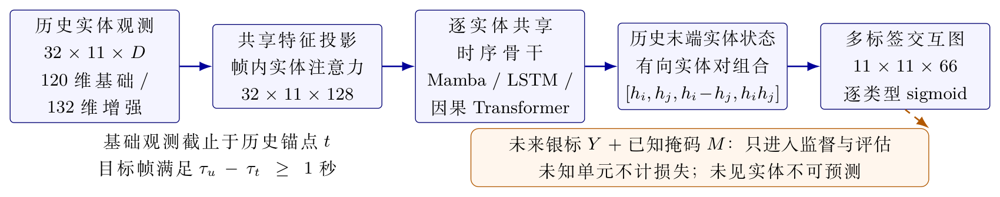
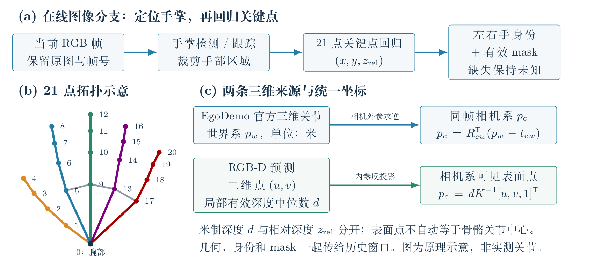
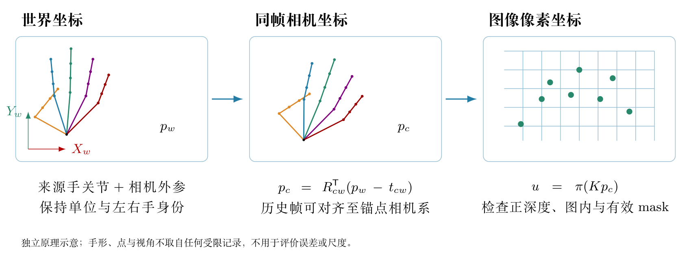
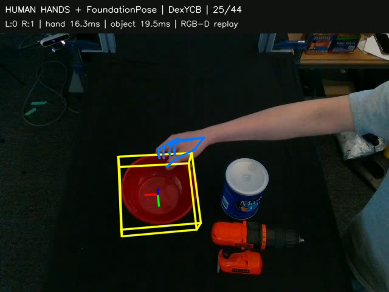
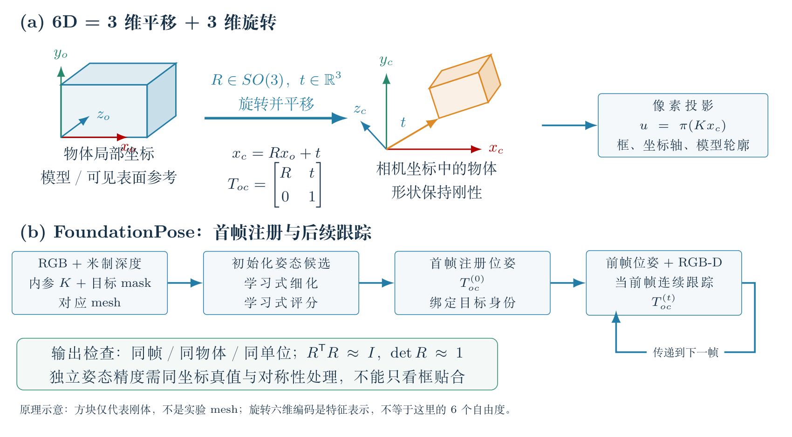
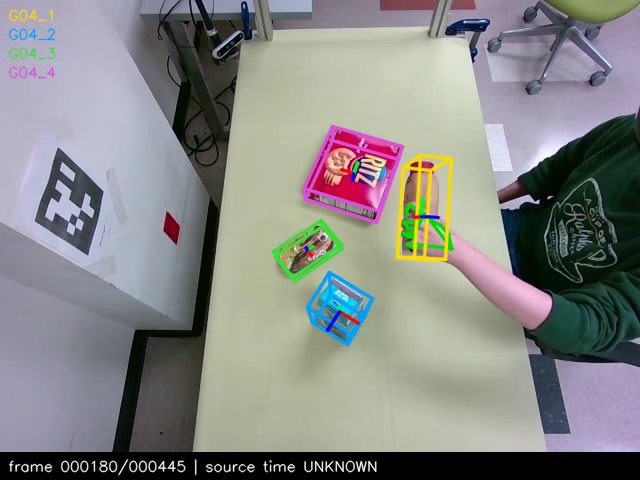
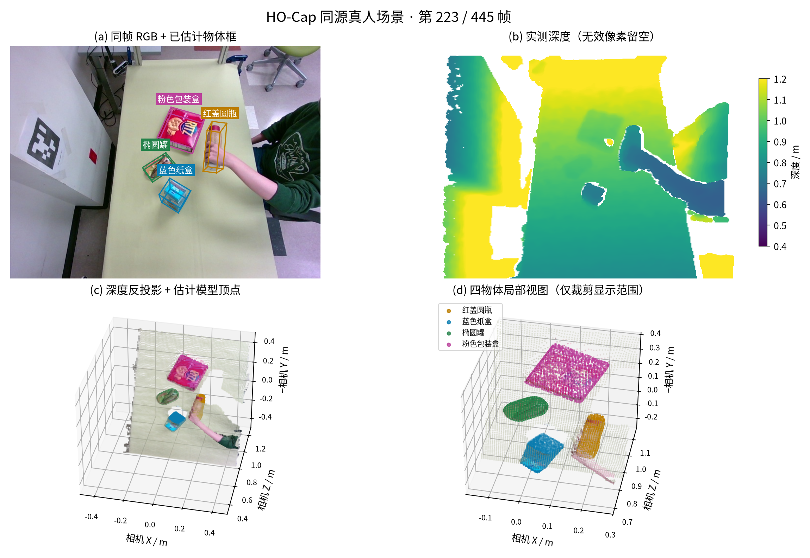
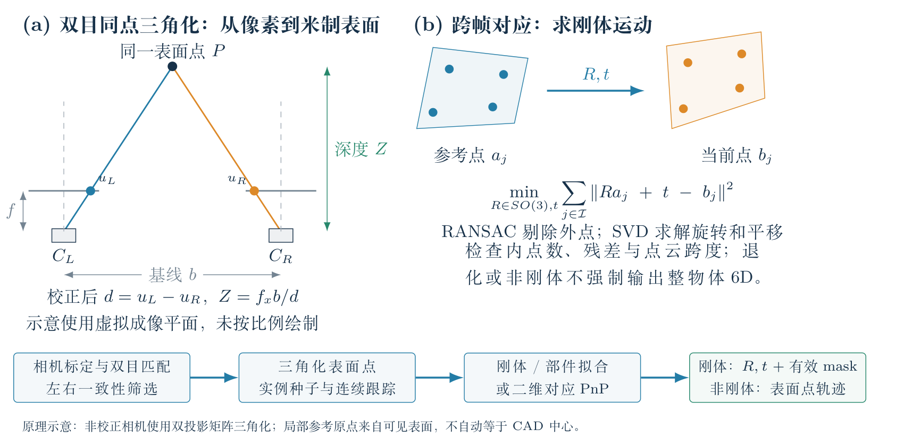
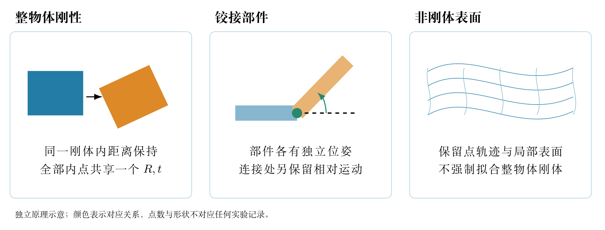
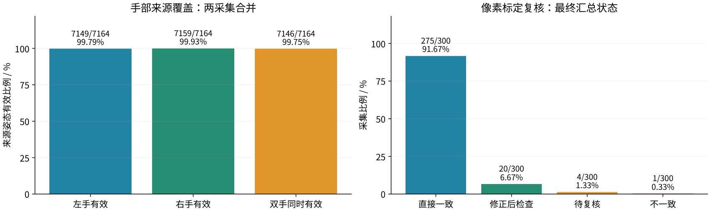
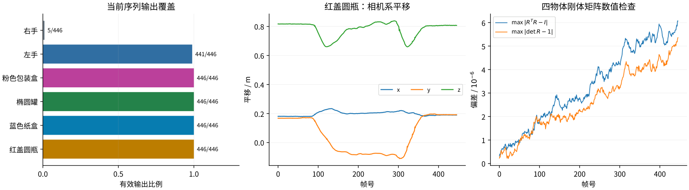
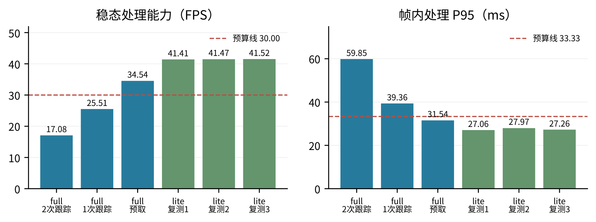
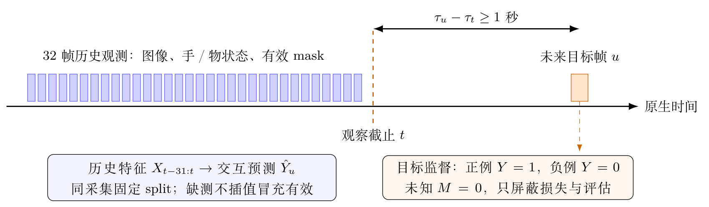
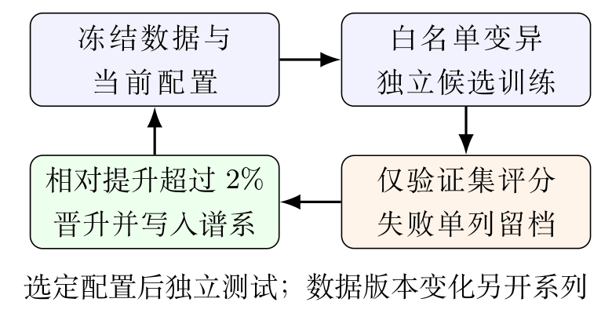
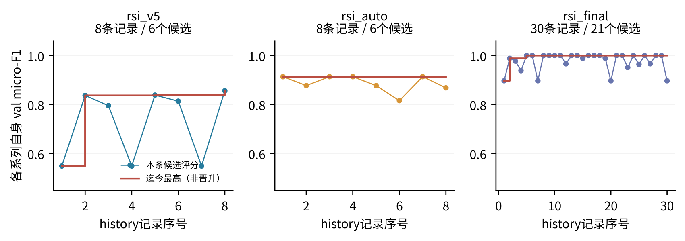
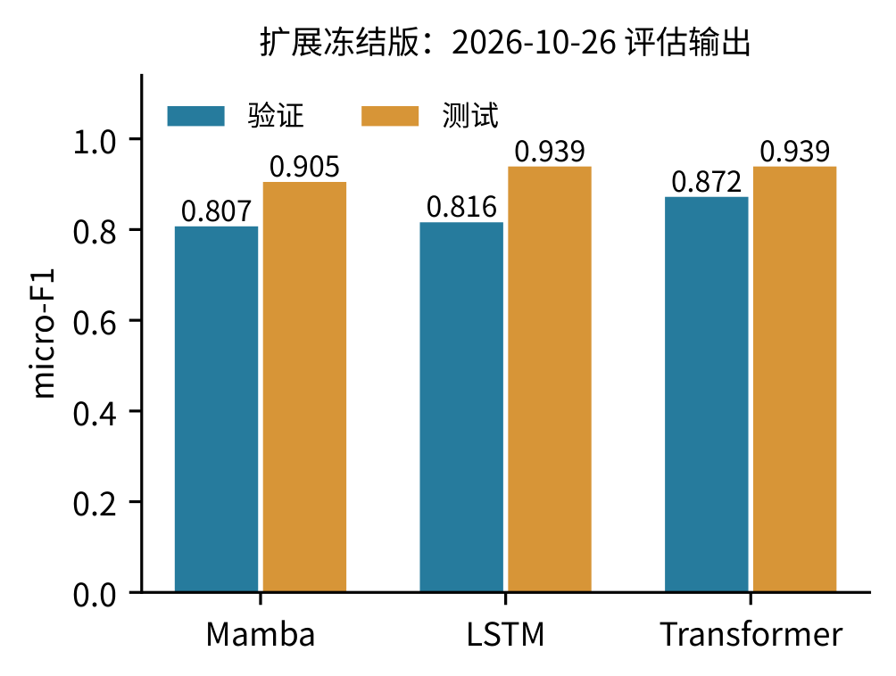
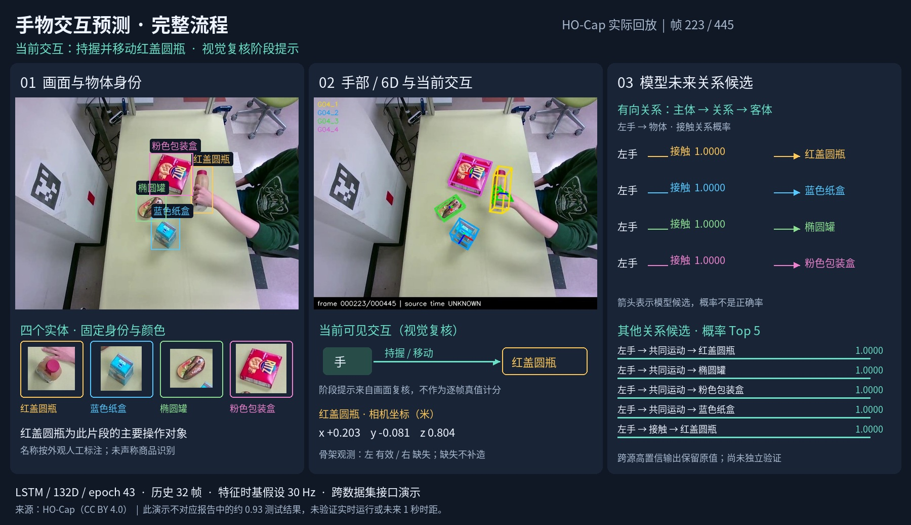
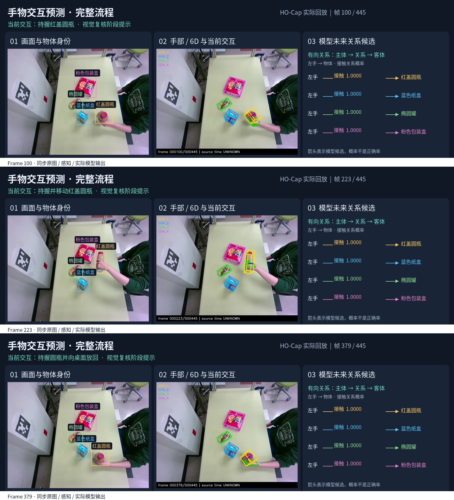
报告源码在 05_报告源码，必要实验记录在 06_实验依据，实现与复核工具分别在 07_实现源码、08_复核工具。
阅读与复跑说明 · 素材筛选说明 · 文件清单与校验 · 素材来源